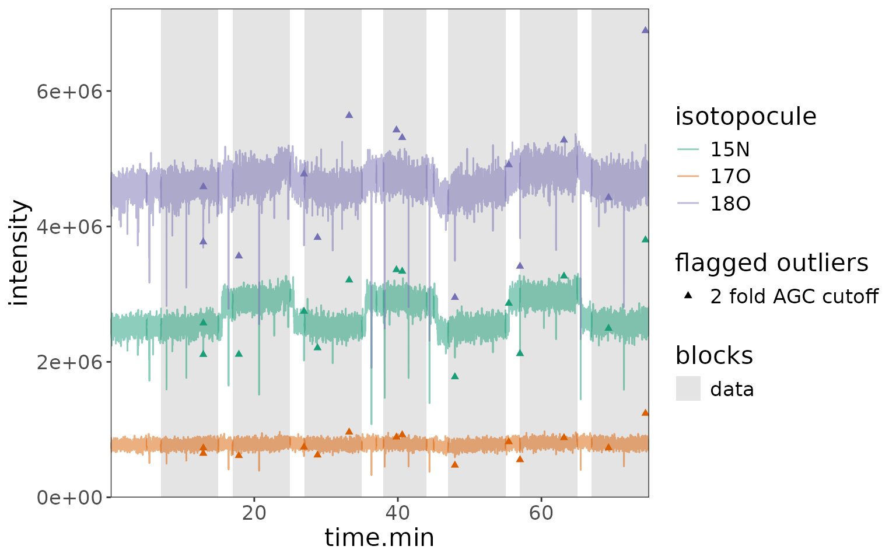

This is a minimal example for processing .raw data files from a dual inlet experiment
# libraries
library(isoorbi) #load isoorbi R package
library(forcats) #better ordering of factor variables in plots
library(dplyr) # for mutating data frames
library(ggplot2) # for data visualizationLoad raw file(s)
# Read .raw file test data
raw_file <- file.path(system.file("extdata", package = "isoorbi"), "testfile_dual_inlet.raw")
data_all <-
raw_file |>
orbi_read_raw(include_spectra = c(10, 100)) |>
orbi_aggregate_raw()
# Identify nitrate isotopocules (could come from a tsv, csv, or xlsx spreadsheet instead)
isotopocules <- tibble(
compound = "nitrate",
isotopocule = c("M0", "15N", "17O", "18O"),
mass = c(61.9878, 62.9850, 62.9922, 63.9922),
tolerance = 1,
charge = 1
)
data_all <- data_all |>
orbi_identify_isotopocules(isotopocules) |>
# disregard unidentified and missing isotopocules
orbi_filter_isotopocules() |>
# calculate ions
orbi_calculate_ions()Preprocess data
# Preprocess data (this is exactly the same as with an isox file)
df <-
data_all |>
# check for issues
# removes minor signals that were reported by IsoX in the same tolerance window where the peak of interest is
orbi_flag_satellite_peaks() |>
# removes signals of isotopocules that were not detected at least in min_percent scans
orbi_flag_weak_isotopocules(min_percent = 100) |>
# removes outlying scans that have more than 2 times or less than 1/2 times the average
# number of ions in the Orbitrap analyzer; another method: agc_window (see function documentation for more details)
orbi_flag_outliers(agc_fold_cutoff = 2) |>
# sets one isotopocule in the dataset as the base peak (denominator) for ratio calculation
orbi_define_basepeak(basepeak_def = "M0") No satellite peaks, no weak isotopocules, a few AGC fold outliers:
df |> orbi_plot_raw_data(y = tic * it.ms, y_scale = "log")
Define dual inlet blocks
# define blocks
df_w_blocks <-
df |>
# general definition
orbi_define_blocks_for_dual_inlet(
ref_block_time.min = 10, # the reference block is 10 min long
sample_block_time.min = 10, # the sample block is 10 min long
startup_time.min = 5, # there is 5 min of data before the reference block starts, to stabilize spray conditions
change_over_time.min = 2, # it takes 2 min to make sure the right solution is measured after switching the valve
sample_block_name = "sample",
ref_block_name = "reference"
) |>
# fine adjustments
orbi_adjust_block(block = 1, shift_start_time.min = 2) |> # the 1st reference block is shorter by 2 min, cut from the start
orbi_adjust_block(block = 4, set_start_time.min = 38, set_end_time.min = 44) # the start and end of the 2nd reference block are manually set
# get blocks info
blocks_info <- df_w_blocks |> orbi_get_blocks_info()
blocks_info |> knitr::kable()| uidx | filename | data_group | block | sample_name | data_type | segment | start_scan.no | end_scan.no | start_time.min | end_time.min |
|---|---|---|---|---|---|---|---|---|---|---|
| 1 | testfile_dual_inlet | 1 | 0 | reference | startup | NA | 1 | 822 | 0.0069267 | 4.996783 |
| 1 | testfile_dual_inlet | 2 | 1 | reference | unused | NA | 823 | 1152 | 5.0028499 | 7.002534 |
| 1 | testfile_dual_inlet | 3 | 1 | reference | data | NA | 1153 | 2467 | 7.0086023 | 14.994198 |
| 1 | testfile_dual_inlet | 4 | 2 | sample | changeover | NA | 2468 | 2796 | 15.0002893 | 16.996492 |
| 1 | testfile_dual_inlet | 5 | 2 | sample | data | NA | 2797 | 4112 | 17.0025578 | 24.994222 |
| 1 | testfile_dual_inlet | 6 | 3 | reference | changeover | NA | 4113 | 4441 | 25.0005399 | 26.997343 |
| 1 | testfile_dual_inlet | 7 | 3 | reference | data | NA | 4442 | 5757 | 27.0034184 | 34.995687 |
| 1 | testfile_dual_inlet | 8 | 4 | sample | changeover | NA | 5758 | 6086 | 35.0019892 | 36.998449 |
| 1 | testfile_dual_inlet | 9 | 4 | sample | unused | NA | 6087 | 6250 | 37.0045150 | 37.994845 |
| 1 | testfile_dual_inlet | 10 | 4 | sample | data | NA | 6251 | 7238 | 38.0009123 | 43.999949 |
| 1 | testfile_dual_inlet | 11 | 4 | sample | unused | NA | 7239 | 7402 | 44.0060263 | 44.996372 |
| 1 | testfile_dual_inlet | 12 | 5 | reference | changeover | NA | 7403 | 7730 | 45.0026717 | 46.994070 |
| 1 | testfile_dual_inlet | 13 | 5 | reference | data | NA | 7731 | 9047 | 47.0001525 | 54.996822 |
| 1 | testfile_dual_inlet | 14 | 6 | sample | changeover | NA | 9048 | 9376 | 55.0031201 | 56.999885 |
| 1 | testfile_dual_inlet | 15 | 6 | sample | data | NA | 9377 | 10692 | 57.0059518 | 64.997181 |
| 1 | testfile_dual_inlet | 16 | 7 | reference | changeover | NA | 10693 | 11020 | 65.0035025 | 66.994101 |
| 1 | testfile_dual_inlet | 17 | 7 | reference | data | NA | 11021 | 12337 | 67.0001943 | 74.997220 |
| 1 | testfile_dual_inlet | 18 | 8 | sample | changeover | NA | 12338 | 12338 | 75.0035170 | 75.003517 |
Raw data plots
Plot 1: default block highlights + outliers
# total ions per scan
df_w_blocks |> orbi_plot_raw_data(y = intensity)
# isotopocule ratios - you can see that even the AGC outliers still create decent ratios
df_w_blocks |> orbi_plot_raw_data(y = ratio)
Plot 2: highlight blocks in data + no outliers
df_w_blocks |>
orbi_plot_raw_data(
isotopocules = "15N",
y = ratio,
color = NULL,
add_all_blocks = TRUE,
show_outliers = FALSE
) +
# add other ggplot elements, e.g. more specific axis labels
labs(x = "time [min]", y = "15N/M0 ratio")
Plot 3: highlight sample blocks on top
df_w_blocks |>
orbi_plot_raw_data(
isotopocules = "15N",
y = ratio,
add_all_blocks = TRUE,
show_outliers = FALSE,
color = factor(block)
) +
labs(x = "time [min]", y = "15N/M0 ratio", color = "block #")
Data summaries
# calculate summary
df_w_summary <-
df_w_blocks |>
# segment (optional)
orbi_segment_blocks(into_segments = 3) |>
# calculate results, including for the unused parts of the data blocks
orbi_summarize_results(
ratio_method = "sum",
include_unused_data = TRUE
)
# export to excel
df_w_summary |> orbi_export_data_to_excel(file = "output.xlsx")Plot 1: ratios summary by block and segment
# get out the summary and plot all isotopocules using a ggplot from scratch
df_w_summary |>
orbi_get_data(summary = everything()) |>
filter(data_type == "data") |>
mutate(block_seg = sprintf("%s.%s", block, segment) |> fct_inorder()) |>
# data
ggplot() +
aes(
x = block_seg,
y = ratio, ymin = ratio - ratio_sem, ymax = ratio + ratio_sem,
color = sample_name
) +
geom_pointrange() +
facet_grid(isotopocule ~ ., scales = "free_y") +
# scales
scale_color_brewer(palette = "Set1") +
theme_bw() +
labs(x = "block.segment", y = "ratio")
Plot 2: ratios with block backgrounds and raw data
# make a plot for 15N
plot2 <- df_w_blocks |>
orbi_get_data(scans = everything(), peaks = everything()) |>
filter(isotopocule == "15N") |>
mutate(panel = "raw ratios") |>
# raw data plot
orbi_plot_raw_data(
y = ratio,
color = NULL,
add_all_blocks = TRUE,
show_outliers = FALSE
) +
# ratio summary data
geom_pointrange(
data = function(df) {
df_w_summary |>
orbi_get_data(summary = everything()) |>
filter(as.character(isotopocule) == df$isotopocule[1]) |>
mutate(panel = "summary")
},
map = aes(
x = mean_time.min, y = ratio,
ymin = ratio - ratio_sem, ymax = ratio + ratio_sem,
shape = sample_name
),
size = 0.5
) +
facet_grid(panel ~ ., switch = "y") +
theme(strip.placement = "outside") +
labs(y = NULL, title = "15N/M0")
plot2
# same but with 18O
plot2 %+%
(df_w_blocks |> orbi_get_data(scans = everything(), peaks = everything()) |>
filter(isotopocule == "18O") |> mutate(panel = "raw ratios")) +
labs(title = "18O/M0")